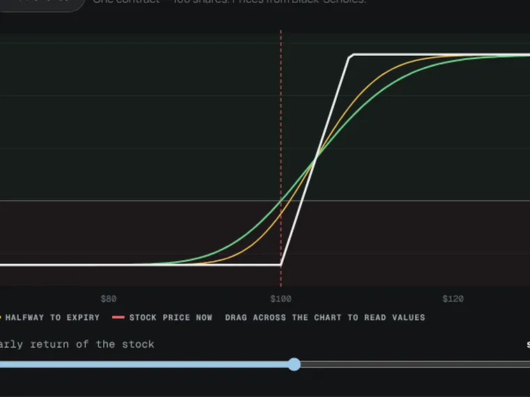
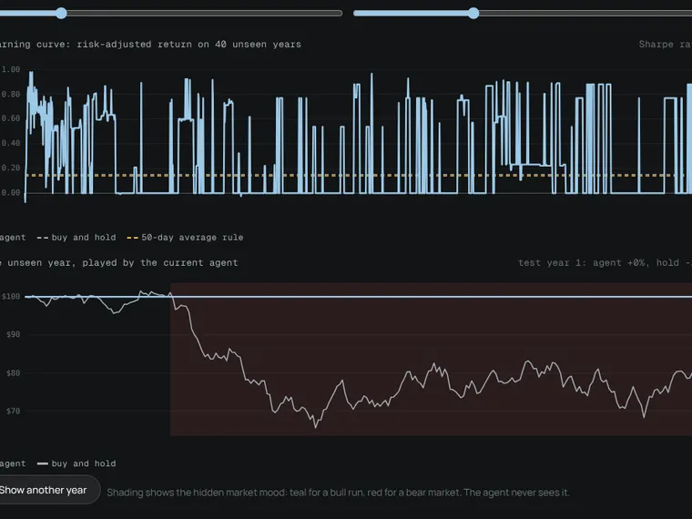
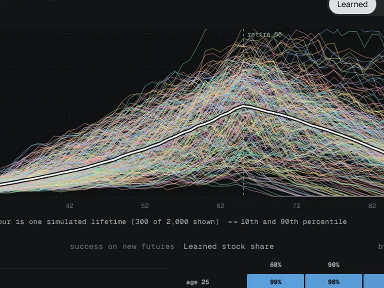

Applied AI · Luis Diaz Busquets
Machine learningyou can watchthink.
A 14-module course, learning agents and finance tools, all running live in your browser.
Three pieces worth your time.

Options builder
Build spreads, straddles and condors. Payoff at expiry and today, Black-Scholes prices and the Greeks.

Market trader
A Q-learning agent teaches itself when to be in or out of a market with hidden bull and bear regimes, scored on 40 years it never saw.

Monte Carlo planner
Monte Carlo over thousands of lifetimes, with a planner that learns how much stock to hold and when to trim spending.
From first principles to infrastructure.
Five tracks, one idea per module, every one interactive. Open a track to see its modules.
- MOD-03Neural networksNeurons, layers and backpropagation, with a small network learning to separate shapes live on the page.Open →
- MOD-04Seeing with networksHow image models find edges, then parts, then objects: the same kind of detector running in the feed above.Open →
- MOD-05EmbeddingsHow words, images and documents become lists of numbers where similar things sit close together.Open →
- MOD-06How an LLM worksTokens, embeddings, attention and next-token prediction, in a real mini transformer you can type into.Open →
- MOD-07DiffusionHow image generators start from pure noise and clean it up, one step at a time, into a picture.Open →
- MOD-08From predictor to assistantFine-tuning and human feedback: how a raw text predictor becomes a helpful chat assistant.Open →
- MOD-09Why AI runs on GPUsMatrix maths, memory bandwidth and why one chip family powers almost all of modern AI.Open →
- MOD-10Training at scaleSplitting a model across thousands of chips, and what a frontier training run costs.Open →
- MOD-11How models are servedMemory per model, batching, latency and what each answer costs to run.Open →
- MOD-12How AI looks things upRetrieval (RAG), the technique behind chatting with your own documents.Open →
- MOD-13How agents workModels that use tools and take steps, tied to my LADON and HERETIC research agents.Open →
Tools that price, quote and size risk.
The maths a desk uses, with every number explained on the page.
Every outcome, fully simulated.
Risk desks look at thousands of possible futures at once. Here are 400 of them, drawn live on your device.
Median outcome of 400
Legend
Price paths $100 stock
Distribution final price
White line: where it started.
Chance of a loss ends below start
A hypothetical $100 stock with an 8% yearly drift, simulated with geometric Brownian motion. An illustration of risk, not a forecast.
Agents that learn from their mistakes.
Five agents start knowing nothing, practise on simulated markets, leagues and board games, and are always scored on data they never trained on. Each page lists the mistakes they learned from.
Real detection, on real footage.
Licensed stock footage, analysed live in your browser. Faces are blurred automatically. Click anything to follow it.
Everything in the lab.
| ID | Name | What you do | Method | Status | |
|---|---|---|---|---|---|
| Course modules · 14 | |||||
| MOD-01 | How models learn | Fit a line by hand, explore the loss landscape, watch gradient descent train it, and see overfitting happen. | ML foundations | Active | Open → |
| MOD-02 | Classic machine learning | Decision trees, clustering and nearest neighbours: the workhorse methods behind credit scores and fraud alerts. | ML foundations | Active | Open → |
| MOD-03 | Neural networks | Neurons, layers and backpropagation, with a small network learning to separate shapes live on the page. | Deep learning | Active | Open → |
| MOD-04 | Seeing with networks | How image models find edges, then parts, then objects: the same kind of detector running in the feed above. | Deep learning | Active | Open → |
| MOD-05 | Embeddings | How words, images and documents become lists of numbers where similar things sit close together. | Deep learning | Active | Open → |
| MOD-06 | How an LLM works | Tokens, embeddings, attention and next-token prediction, in a real mini transformer you can type into. | Generative AI | Active | Open → |
| MOD-07 | Diffusion | How image generators start from pure noise and clean it up, one step at a time, into a picture. | Generative AI | Active | Open → |
| MOD-08 | From predictor to assistant | Fine-tuning and human feedback: how a raw text predictor becomes a helpful chat assistant. | Generative AI | Active | Open → |
| MOD-09 | Why AI runs on GPUs | Matrix maths, memory bandwidth and why one chip family powers almost all of modern AI. | AI infrastructure | Active | Open → |
| MOD-10 | Training at scale | Splitting a model across thousands of chips, and what a frontier training run costs. | AI infrastructure | Active | Open → |
| MOD-11 | How models are served | Memory per model, batching, latency and what each answer costs to run. | AI infrastructure | Active | Open → |
| MOD-12 | How AI looks things up | Retrieval (RAG), the technique behind chatting with your own documents. | AI infrastructure | Active | Open → |
| MOD-13 | How agents work | Models that use tools and take steps, tied to my LADON and HERETIC research agents. | AI infrastructure | Active | Open → |
| MOD-14 | Evaluation and failure | Benchmarks, hallucinations and bias: how to tell whether a model is actually good, and where it breaks. | Evaluation | Active | Open → |
| Finance tools · 3 | |||||
| TOOL-01 | Options builder | Build spreads, straddles and condors. Payoff at expiry and today, Black-Scholes prices and the Greeks. | Black-Scholes | Active | Open → |
| TOOL-02 | Market maker | Quote a bid and an ask while informed traders pick you off. Live Bayesian fair value and break-even quotes. | Bayesian quoting | Active | Open → |
| TOOL-03 | Kelly challenge | The $25, 60% coin experiment most finance professionals fail: bet sizing against a Kelly benchmark and 2,000 simulated players. | Kelly criterion | Active | Open → |
| Learning agents · 5 | |||||
| AGENT-01 | Market trader | A Q-learning agent teaches itself when to be in or out of a market with hidden bull and bear regimes, scored on 40 years it never saw. | Q-learning | Active | Train → |
| AGENT-02 | Day trader | A small neural network learns to forecast one-minute prices from its own errors and trades only when the forecast beats the cost. | Neural network | Active | Train → |
| AGENT-03 | Sports-market model | Learns the strength of 20 clubs from every result and sizes positions with fractional Kelly only when its price beats the market. | Online ratings | Active | Train → |
| AGENT-04 | Monte Carlo planner | Monte Carlo over thousands of lifetimes, with a planner that learns how much stock to hold and when to trim spending. | Monte Carlo | Active | Train → |
| AGENT-05 | Landlord | A genetic algorithm evolves strategies for a property-trading board game: what to buy, when to build, how to trade. | Genetic algorithm | Active | Train → |
| Games, just for fun · 7 | |||||
| GAME-01 | Blackjack | Six-deck blackjack with the exact expected value of every move, the basic strategy chart and a Hi-Lo count. | Expected value | Active | Play → |
| GAME-02 | Texas Hold'em | No-limit hold'em against three bots, with live equity, outs, pot odds and a suggested move. | Monte Carlo equity | Active | Play → |
| GAME-03 | Chess | A home-built engine at five levels, with an evaluation bar, best-move hints and a grade for every move. | Alpha-beta search | Active | Play → |
| GAME-04 | UNO Chess: hand rules | Hold three cards and match the pile: move up to three times, skip your opponent, or move one of their pieces. | Beam-search planner | Active | Play → |
| GAME-05 | UNO Chess: draw rules | One shared deck, one card per turn: +2 and +4 revive lost pieces, and Reverse swaps sides. | Beam-search planner | Active | Play → |
| GAME-06 | Minesweeper | The exact chance of a mine under every square, a solver to watch, and the logic behind each move. | Exact probability | Active | Play → |
| GAME-07 | Connect Four | A solved game: every column labelled win, draw or loss once it can be searched to the end. | Game-tree solver | Active | Play → |
Or explore from the command line.
Why this exists.
I study finance at Bryant University, with minors in Applied AI and Law. I built the Lab to understand these models well enough to build them myself, and to test where they help with real financial decisions and where they do not.
Each agent page reports what the agent got wrong, not just what it got right, and compares it with simple rules a person could follow.